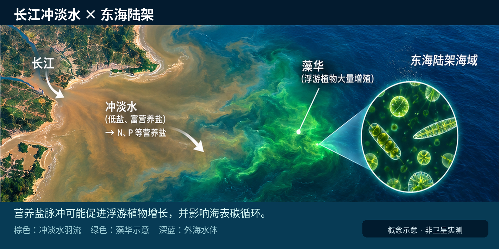
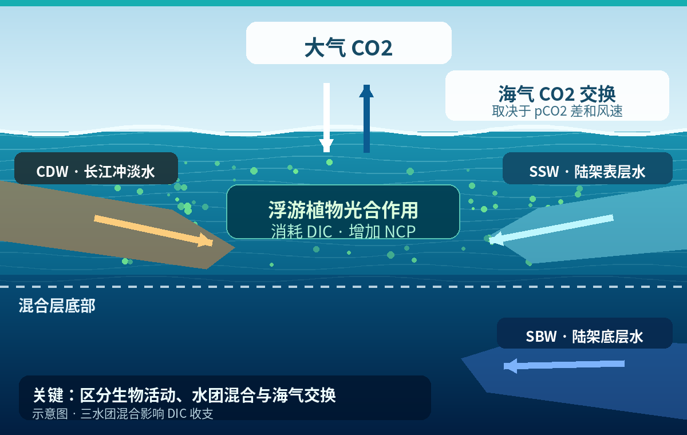
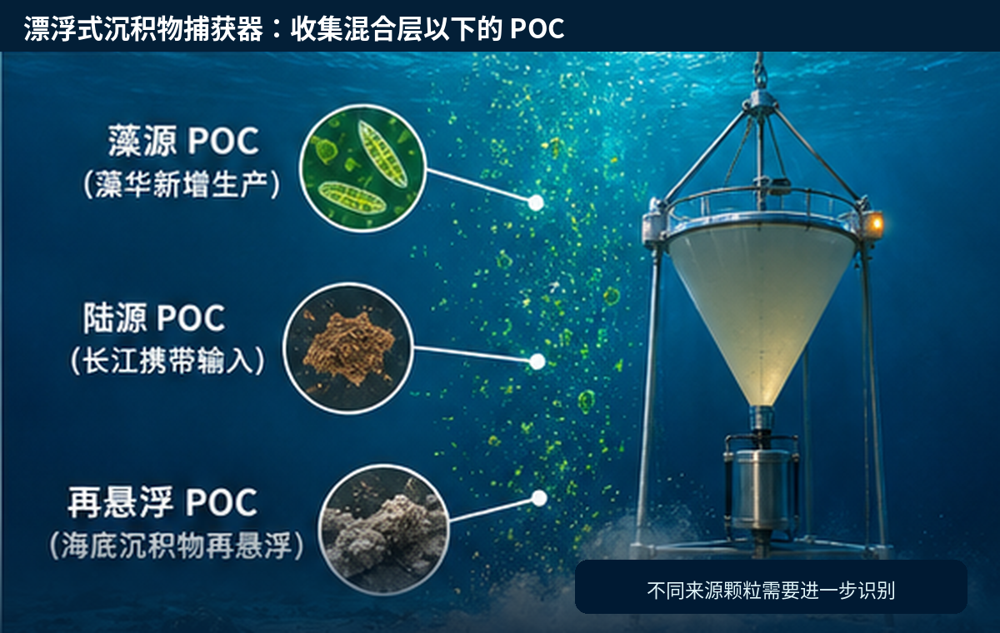
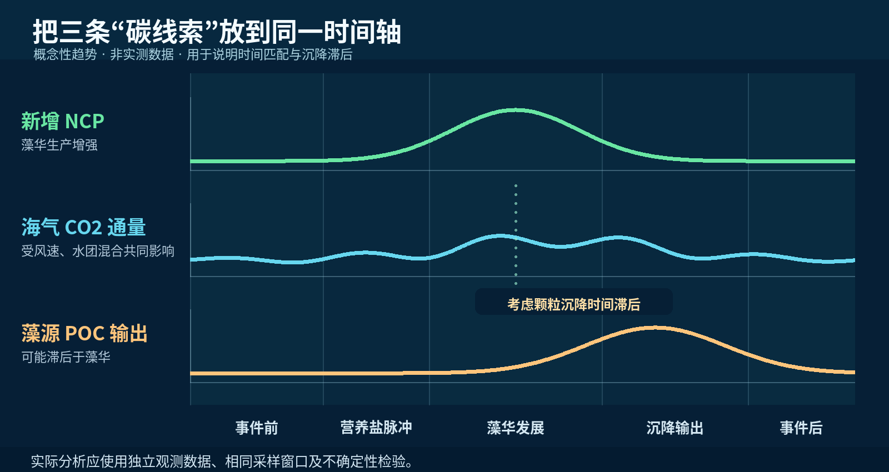

你好，我是 YHY 🌊 / Hi, I'm YHY
物理海洋学 · 海洋数据分析 · 科学编程
Physical Oceanography · Ocean Data Analysis · Scientific Programming
欢迎来到我的个人知识库。我关注物理海洋学，兴趣集中在海洋环流、温盐结构、海气相互作用以及河口动力学。这里记录了我对《物理海洋学》课程的深度研读、课堂反思以及独立设计的科研项目。
Welcome to my personal knowledge hub. I focus on physical oceanography, with particular interests in ocean circulation, temperature–salinity structure, air–sea interactions, and estuarine dynamics. Here I document my in-depth study of physical oceanography, classroom reflections, and independently designed research projects.
🛠 技能与工具 / Skills & Tools
📚 教材精读笔记 / Textbook Notes
基于 Talley 等编著的《物理海洋学》（第六版）的详细研读，涵盖第 1–8 章的核心理论、公式推导与重点图表。
Detailed notes based on Talley et al., Descriptive Physical Oceanography: An Introduction (Sixth Edition), covering key theories, equation derivations, and important figures from Chapters 1–8.

《物理海洋学》（第六版）
Descriptive Physical Oceanography: An Introduction (Sixth Edition)
物理海洋学的经典基础教材，全面介绍海洋的物理性质、动力学过程及海气相互作用。
A foundational textbook in physical oceanography, covering the ocean's physical properties, dynamical processes, and air–sea interactions.
第 1 章：物理海洋学概论 / Chapter 1: Introduction
📖 核心理论 / Key Concepts
物理海洋学是一门基于观测的学科，致力于描述和解释海洋的物理状态及其变化。研究的核心逻辑是“What（现象）— Why（机制）— How（观测与量化）”。
Physical oceanography is an observation-based discipline that describes and explains the ocean's physical state and its variability. Its central framework asks: “What (phenomena) – Why (mechanisms) – How (observation and quantification).”
海洋现象跨越很广的时空尺度：微观尺度涉及分子混合，中尺度包括内波和潮汐，大尺度涵盖大洋环流和热盐环流。大尺度运动受到地球自转（科氏力）的显著影响。
Ocean phenomena span a wide range of spatial and temporal scales: molecular mixing at small scales, internal waves and tides at intermediate scales, and basin-scale circulation and thermohaline overturning at large scales. Earth's rotation (the Coriolis force) strongly affects large-scale motion.

Figure 1.2: Spatial and temporal scales of physical oceanographic phenomena
🔎 补充精读 / Supplementary Deep-Dive
📖 教材依据：第 1 章，原书第 1–5 页 / Source: Chapter 1, textbook pp. 1–5.
1. 从描述到解释：观测驱动的研究链条 / From description to explanation
完整的研究过程通常从识别现象开始：提出可检验的机制假设，选择温度、盐度、海面高度与流速等观测量，最后通过守恒方程或数值模拟验证。单次观测只能描述某一时刻，而时间序列与重复断面才能揭示季节性和长期变化。
A complete investigation begins by identifying a phenomenon, proposing testable physical mechanisms, selecting observations such as temperature, salinity, sea-surface height and velocity, and testing explanations with conservation laws or numerical models. A single survey describes a snapshot; time series and repeated sections reveal seasonal and long-term variability.
2. 海洋动力过程的尺度意识 / Thinking across spatial and temporal scales
研究现象时应同时问：水平尺度 L、垂向尺度 H、典型流速 U 和变化时间 T 分别是多少？局地湍流、潮汐、涡旋与全球翻转环流的主控过程不同，因此观测频率、空间分辨率和适用近似也不同。
For each process, ask about its horizontal scale L, vertical scale H, characteristic speed U, and timescale T. Local turbulence, tides, mesoscale eddies and global overturning circulation involve different dominant physics, so they require different sampling rates, spatial resolutions and approximations.
3. 旋转效应与罗斯贝数 / Rotation and the Rossby number
衡量地球自转重要性的常用无量纲参数为 Ro = U/(|f|L)，其中 f = 2Ωsinφ。Ro ≪ 1 表示旋转效应通常重要；Ro 较大时局地惯性或加速度不可忽视。接近赤道时 f → 0，不能机械套用中高纬地转近似。
The nondimensional Rossby number is Ro = U/(|f|L), where f = 2Ωsinφ. When Ro ≪ 1, planetary rotation is often important; larger Ro indicates that local inertia and acceleration cannot be neglected. Near the equator, f approaches zero, so midlatitude geostrophic approximations must be used with caution.
4. 读图方法：时间、空间与单位 / How to read an oceanographic figure
阅读任意温盐、断面或流场图时，先辨识坐标、单位、等值线间隔、时间平均窗口与观测深度，再判断图中的结构是空间差异还是时间变化。对比两幅图前，还应确认它们采用相同的色标和参考基准。
Before interpreting temperature–salinity maps, sections, or current fields, check axes, units, contour intervals, averaging periods and measurement depths. Distinguish spatial contrasts from temporal change, and verify that comparative figures use consistent color scales and reference levels.
f = 2Ω sinφ；Ro = U/(|f|L)
Ω：地球自转角速度；φ：纬度。 / Ω: Earth’s angular rotation rate; φ: latitude.
比较潮汐、海洋中尺度涡和大洋环流时，为何不能使用同一套时空采样分辨率？
Why should tides, mesoscale eddies and basin-scale circulation not be sampled at the same temporal and spatial resolution?
第 2 章：海洋维度、形状和底质 / Chapter 2: Ocean Dimensions, Shape & Seafloor
📖 核心理论 / Key Concepts
海陆分布：海洋覆盖地球约 71% 的面积，平均深度约 3,734 m，远超陆地平均海拔（743 m）。最深的马里亚纳海沟深达约 11,000 m。
Ocean–land distribution: The ocean covers about 71% of Earth's surface and has an average depth of approximately 3,734 m, much greater than the average land elevation of 743 m. The Mariana Trench reaches depths of around 11,000 m.
海底扩张：海洋地壳相对年轻（最老不超过约 2.8 亿年）。洋中脊形成新地壳，海沟则是板块俯冲的场所。快速扩张的洋中脊（如东太平洋海隆）地形较平滑；慢速扩张的洋中脊（如大西洋中脊）常有明显的中央裂谷。
Seafloor spreading: Oceanic crust is relatively young (no older than roughly 280 million years). New crust forms at mid-ocean ridges, while tectonic plates subduct at trenches. Fast-spreading ridges, such as the East Pacific Rise, tend to have smoother topography; slow-spreading ridges, such as the Mid-Atlantic Ridge, often feature a prominent axial rift valley.
🔎 补充精读 / Supplementary Deep-Dive
📖 教材依据：第 2 章，原书第 6–26 页 / Source: Chapter 2, textbook pp. 6–26.
1. 海底地形分区：陆架到深海 / From continental shelves to the deep ocean
典型大陆边缘依次包括大陆架、大陆坡与大陆隆；深海海盆中常见深海平原、海山与海沟。大陆架通常较浅且坡度较缓，而陆坡是向深海过渡的陡峭区域。地形不仅决定水深，也决定海流受到的边界约束。
A typical continental margin includes the shelf, slope and rise, while the deep-ocean basin contains abyssal plains, seamounts and trenches. Continental shelves are relatively shallow and gently sloping; continental slopes provide a steeper transition to the deep sea. Bathymetry also constrains ocean circulation.
2. 板块边界与洋中脊 / Plate boundaries and mid-ocean ridges
洋中脊属于板块张裂与新洋壳形成区域；俯冲带和深海沟标志着旧洋壳向地幔的回收。转换断层错开洋中脊轴段。可通过洋底年龄分布、地磁条带与海底地形联系板块运动和海盆演化。
New oceanic crust forms at spreading centers along mid-ocean ridges, whereas old oceanic crust is recycled at subduction zones and trenches. Transform faults offset segments of ridge axes. Seafloor age, magnetic stripes and bathymetry jointly reveal plate motion and basin evolution.
3. 海洋测深与等深线 / Bathymetry and depth contours
回声测深可通过声波往返时间估算水深；海面高度异常和卫星重力场可辅助推断海底大尺度结构。阅读等深线图时，等深线越密通常表示局地坡度越陡；测量方法与网格分辨率会影响地形细节。
Echo sounding estimates depth from the two-way acoustic travel time; sea-surface height and satellite gravity observations can help infer broad seafloor features. Closely spaced isobaths generally indicate steeper slopes. The measurement method and grid resolution affect how much detail a bathymetric chart resolves.
4. 海底地形对流动的控制 / How topography steers ocean flow
海岭、海台、海峡和海山可限制深层水交换，并使流场转向、加速或形成局地涡旋。深层海流受到地形与地转约束；浅海大陆架则更容易受到潮汐、风与海底摩擦的共同影响。
Ridges, plateaus, sills and seamounts constrain deep-water exchange and may steer or accelerate currents or generate local eddies. Deep currents respond to bathymetric and geostrophic constraints, whereas shelf currents are strongly influenced by tides, wind and bottom friction.
5. 海底高程分布曲线 / Hypsometry of Earth’s surface
海陆高程分布呈现陆地与海底两个主要高度带，说明大陆地壳与大洋地壳在厚度、组成和密度等方面具有系统差异。研究时应区分平均海洋深度、最大水深和局地海盆深度。
The distribution of surface elevation has distinct continental and ocean-basin modes, reflecting systematic differences between continental and oceanic crust. Average ocean depth, maximum depth and local basin depth represent different quantities and should not be confused.
h ≈ cₛ × Δt / 2
h：水深；cₛ：水中声速；Δt：声波往返时间。 / h: depth; cₛ: sound speed; Δt: two-way travel time.
为什么海底山脊或海峡的门槛水深会改变深层水团之间的交换？
Why can a ridge or sill depth change exchanges between deep-water masses?
第 3 章：海水的物理性质 / Chapter 3: Physical Properties of Seawater
📖 核心理论 / Key Concepts
温度与位温：深海海水受到绝热压缩。现场温度（T）是实际测得的温度，位温（θ）是水团被绝热提升至海面时的温度。深海中的位温通常低于现场温度；比较不同深度的水团时，位温尤其重要。
In-situ and potential temperature: Deep seawater experiences adiabatic compression. In-situ temperature (T) is the temperature measured at depth; potential temperature (θ) is the temperature a parcel would have if brought adiabatically to the sea surface. At depth, θ is generally lower than T and is especially useful when comparing water masses.
盐度：盐度表述已从早期的千分比发展到现代基于电导率等测量的盐度体系，包括实用盐度与绝对盐度。
Salinity: Salinity measurements have evolved from the historical parts-per-thousand convention to modern frameworks, including Practical Salinity and Absolute Salinity, informed by conductivity and other measurements.
密度与特殊过程：海水密度主要由温度、盐度和压力决定。密度跃层阻碍垂直混合。混合增密（Cabbeling）是指两种水团混合后密度可能增大；由于热和盐的分子扩散速率不同，还会出现双扩散过程（盐指和扩散对流）。
Density and special processes: Seawater density depends primarily on temperature, salinity, and pressure. The pycnocline inhibits vertical mixing. Cabbeling occurs when mixing two water masses produces a denser mixture. Unequal molecular diffusion rates of heat and salt can also cause double-diffusive processes, including salt fingering and diffusive convection.

Figure 4.10: In-situ temperature (T) versus potential temperature (θ) in the Mariana Trench
🔎 补充精读 / Supplementary Deep-Dive
📖 教材依据：第 3 章，原书第 27–63 页 / Source: Chapter 3, textbook pp. 27–63.
1. 静水压与深度 / Hydrostatic pressure and depth
静止或近似静水的海洋满足 dp/dz = −ρg（z 向上为正）。因此压力随深度增加。海洋学中常用 dbar 表示压力；近海面处约 1 dbar 对应 1 m 水深，但精确换算取决于密度与重力加速度。
In a resting or nearly hydrostatic ocean, dp/dz = −ρg when z is positive upward; pressure therefore increases with depth. Oceanographers often use dbar for pressure. Near the surface, 1 dbar is approximately 1 m of depth, but accurate conversion depends on density and gravity.
2. 实用盐度、绝对盐度和单位 / Practical Salinity versus Absolute Salinity
实用盐度 SP 根据电导率比值定义，在 PSS-78 中属于无量纲量；绝对盐度 SA 表示单位质量海水所含溶解物质量，通常用 g/kg 表示。在解释密度与热力学性质时，必须分清所用盐度体系。
Practical Salinity (SP) is defined from conductivity ratios under PSS-78 and is dimensionless. Absolute Salinity (SA) is expressed as the mass of dissolved material per mass of seawater, commonly in g/kg. It is important to identify which salinity scale is used in density and thermodynamic calculations.
3. 状态方程与密度稳定性 / Equation of state and density stratification
海水状态方程可写成 ρ = ρ(S,T,p)。在通常海洋条件下，增加盐度或压力通常使密度增大；温度的影响依赖于温盐压条件。判断垂向稳定性时必须比较处于相同参考压力下的密度，而不能直接以不同深度的原位密度大小判断。
The seawater equation of state is written ρ = ρ(S,T,p). Increasing salinity or pressure usually increases density under typical oceanic conditions, while the temperature dependence varies with conditions. Vertical stability should be assessed using densities referenced to a common pressure, not by simply comparing in-situ densities at different depths.
4. 位温、保守温度和密度异常 / Potential temperature, Conservative Temperature and density anomaly
位温用于去除绝热压缩导致的温度变化；现代 TEOS-10 体系还常用保守温度 CT。密度异常常写作 σθ = ρθ − 1000 kg/m³，适合展示水团密度差异，但使用时应注明参考压力或所用密度定义。
Potential temperature removes the warming associated with adiabatic compression, while modern TEOS-10 practice often uses Conservative Temperature (CT). Density anomaly is commonly written σθ = ρθ − 1000 kg/m³; when using it, identify the reference pressure and density definition.
5. 浮力频率与层结 / Buoyancy frequency and stratification
布伦特–魏萨拉频率（Brunt–Väisälä frequency）N 衡量稳定层结中水团发生垂向位移后恢复振荡的快慢。若 z 向上，简化表达为 N² ≈ −(g/ρ₀)∂ρ/∂z。稳定层结一般 N² > 0；它也是理解内波的重要参数。
The Brunt–Väisälä frequency N characterizes the oscillation of a vertically displaced parcel in a stably stratified fluid. With z positive upward, a simplified expression is N² ≈ −(g/ρ₀)∂ρ/∂z. Stable stratification generally has N² > 0, and N is central to internal-wave dynamics.
6. 海水中的光与声 / Light and sound in seawater
光在海水中因吸收与散射而迅速衰减，且不同波长的穿透能力不同；声音能传播得更远，其速度随温度、盐度和压力变化。这解释了为何海洋颜色和初级生产力常用光学观测，而深度、地形与水下探测常用声学方法。
Light attenuates rapidly through absorption and scattering, and penetration varies by wavelength. Sound travels much farther; its speed depends on temperature, salinity and pressure. Optical methods are therefore useful for ocean color and productivity, while acoustics are widely used for depth, bathymetry and underwater sensing.
7. 海冰、冻结与海水密度 / Sea ice, freezing and seawater density
海水凝固点随盐度增加而降低。海冰形成时盐分通常被排斥至周围海水，引起增盐与局地密度增加；融冰则可淡化表层并增强层结。相关过程会影响高纬混合与深层水形成。
The freezing point of seawater decreases as salinity increases. Forming sea ice typically rejects salt into surrounding water, increasing local salinity and density; melting ice freshens the surface and may strengthen stratification. These processes influence high-latitude mixing and deep-water formation.
dp/dz = −ρg；ρ = ρ(S,T,p)；N² ≈ −(g/ρ₀)(∂ρ/∂z)
z 向上为正；N² 公式为简化近似，具体计算需考虑可压缩性。 / z is positive upward; the N² expression is a simplified approximation.
为什么比较深海不同深度水团时不能只看原位温度与原位密度？
Why are in-situ temperature and density alone insufficient when comparing water masses at very different depths?
第 4 章：水体特征的典型分布 / Chapter 4: Typical Oceanic Distributions
📖 核心理论 / Key Concepts
温盐分布：表层温度一般随纬度升高而降低。垂向上通常区分混合层、温跃层与深层。表层盐度在蒸发较强的副热带海域较高，在赤道及高纬海域较低。
Temperature and salinity distributions: Sea-surface temperature generally decreases toward higher latitudes. The vertical structure commonly includes a mixed layer, thermocline, and deep layer. Surface salinity is relatively high in evaporative subtropical regions and lower near the equator and at high latitudes.
温盐图（T–S 图）：这是识别水团的重要工具。不同水团具有特定的温盐特征；在理想的保守混合条件下，两个端元水团的混合点沿 T–S 图上的连线分布。
Temperature–salinity (T–S) diagram: A key tool for identifying water masses. Distinct water masses have characteristic temperature–salinity signatures. Under ideal conservative mixing, mixtures of two endmembers lie along the line connecting them on a T–S plot.
水团特征：南极底层水（AABW）通常很冷，北大西洋深层水（NADW）具有相对较高的盐度。温跃层的维持涉及表面热通量、混合、平流等过程之间的动态平衡。
Water-mass characteristics: Antarctic Bottom Water (AABW) is very cold, while North Atlantic Deep Water (NADW) has relatively high salinity. Thermocline maintenance involves a dynamic balance among surface heat fluxes, mixing, advection, and other processes.

Figure 4.11: Vertical sections of potential temperature and salinity in the Atlantic
🔎 补充精读 / Supplementary Deep-Dive
📖 教材依据：第 4 章，原书第 64–103 页 / Source: Chapter 4, textbook pp. 64–103.
1. 混合层、季节温跃层与永久温跃层 / Mixed layer, seasonal and permanent thermoclines
混合层内温度和密度通常相对均匀，受风、浮力通量及季节影响。夏季太阳加热常形成浅而强的季节温跃层；冬季表面冷却和风浪可加深混合层。永久温跃层则反映更持久的大尺度温度结构。
The surface mixed layer is relatively uniform in temperature and density because of wind and buoyancy forcing. Summer heating often creates a shallow seasonal thermocline; winter cooling and storms deepen the mixed layer. The permanent thermocline reflects more persistent large-scale thermal structure.
2. 海面盐度与淡水强迫 / Sea-surface salinity and freshwater forcing
副热带高盐值与净蒸发有关，赤道附近和高纬低盐值常与强降水、河流输入或融冰有关。观测到的盐度分布还受到洋流输送和混合影响，因此不能只从 E−P 推断所有区域的盐度变化。
Subtropical salinity maxima are linked to net evaporation, while lower values near the equator and at high latitudes are often associated with precipitation, river runoff or melting ice. Advection and mixing also shape salinity patterns, so E−P alone cannot explain every regional change.
3. 纬向、垂向与海盆差异 / Latitude, depth and basin contrasts
热带海洋通常具有较暖的表层和强温跃层，高纬海洋温度较低、季节混合更深。大西洋与太平洋的深层温盐结构不同，记录了水团形成区域、传播路径和混合历史。
Tropical oceans usually have warm surface waters and a strong thermocline, while high-latitude oceans tend to be colder and seasonally more deeply mixed. Differences between Atlantic and Pacific deep temperature–salinity structures preserve information about water-mass origins, pathways and mixing histories.
4. 温盐图的读法与局限 / Reading and interpreting T–S diagrams
T–S 图横轴通常为盐度、纵轴为温度；加入等密度线可帮助识别不同水团。两个端元在保守混合条件下形成近似线性混合轨迹，但实际海洋中的热量交换、非线性状态方程与多端元混合会使轨迹复杂化。
A T–S plot usually places salinity on the horizontal axis and temperature on the vertical axis; isopycnals help identify water masses. Conservative mixing of two endmembers follows an approximately straight line, but surface heat exchange, a nonlinear equation of state and multiple endmembers complicate real oceanic mixing curves.
5. 水团形成、通风和示踪 / Water-mass formation, ventilation and tracing
水团通常在海表与大气交换热量和淡水后获得特定温盐性质，并通过俯冲、下沉或侧向传播进入海洋内部。温盐、溶解氧和其他示踪量能够共同帮助识别水团来源和相对年龄。
Water masses acquire characteristic properties through surface heat and freshwater exchange, and then enter the ocean interior by subduction, sinking or lateral transport. Temperature, salinity, dissolved oxygen and other tracers together help identify their origins and relative ages.
6. 稳定层结与跨密度面混合 / Stable stratification and diapycnal mixing
密度跃层倾向于抑制垂向位移，因此沿密度面输送与跨密度面混合应分别讨论。湍流、双扩散及局地强迫可以使热量、盐分与其他示踪物跨越密度层交换。
A pycnocline resists vertical displacement, so along-isopycnal transport and diapycnal mixing should be distinguished. Turbulence, double diffusion and local forcing can exchange heat, salt and other tracers across density surfaces.
T–S 图 + 等密度线 + 垂直剖面 / T–S diagram + isopycnals + vertical sections
联合多种图示通常比单独解释一条温度曲线更可靠。 / Multiple complementary views are more reliable than a single temperature profile.
同一个 T–S 点能否唯一确定海水来源？还需要什么证据？
Does a single T–S point uniquely identify a water mass’s origin? What additional evidence is needed?
第 5 章：质量、盐和热量收支与风的作用 / Chapter 5: Mass, Salt & Heat Budgets and Wind Forcing
📖 核心理论 / Key Concepts
热收支四分量：主要包括太阳短波辐射（Qs，得热项）、长波辐射（Qb，通常为失热项）、潜热通量（Qe，常为主要失热项）和感热通量（Qh）。
Four major air–sea heat flux components: Incoming solar shortwave radiation (Qs, a heat gain), longwave radiation (Qb, generally a heat loss), latent heat flux (Qe, often a major heat loss), and sensible heat flux (Qh).
盐度平衡：蒸发减降水（E−P）是影响表层盐度分布的重要因素。
Salinity balance: Evaporation minus precipitation (E−P) is a major control on sea-surface salinity patterns.
埃克曼动力学：风应力驱动表层海水，在科氏力作用下产生偏转，并形成埃克曼螺旋。垂直积分后的埃克曼净输送与风向垂直（北半球向右约 90°）。风应力旋度还会驱动辐合、辐散和埃克曼抽吸。
Ekman dynamics: Wind stress drives upper-ocean currents, which are deflected by the Coriolis force and may form an Ekman spiral. Vertically integrated Ekman transport is perpendicular to the wind (approximately 90° to the right in the Northern Hemisphere). Wind-stress curl can also drive convergence, divergence, and Ekman pumping.

Figure 5.11: Global distribution of annual-mean heat fluxes
🔎 补充精读 / Supplementary Deep-Dive
📖 教材依据：第 5 章，原书第 104–136 页 / Source: Chapter 5, textbook pp. 104–136.
1. 海洋质量与淡水收支 / Ocean mass and freshwater budgets
海洋通过蒸发、降水、河流入海、海冰形成与融化以及洋流交换水量。区域盐度变化既可能由本地净淡水通量引起，也可能来自水平平流、垂向混合与海水体积变化。
The ocean exchanges water through evaporation, precipitation, river discharge, sea-ice formation and melt, and ocean currents. Regional salinity changes reflect both local freshwater fluxes and transport, vertical mixing and volume changes.
2. 净热通量符号约定 / Sign convention for net surface heat flux
若约定进入海洋的热量为正，则可将净热通量表示为 Qnet = Qsw − Qlw − Qlatent − Qsensible，其中各失热项按正的损失量书写。不同文献可能采用相反的符号定义，因此阅读公式和热通量图时要先检查正负号。
Taking flux into the ocean as positive, one can write Qnet = Qsw − Qlw − Qlatent − Qsensible, where the loss terms are positive magnitudes. Other publications use different sign conventions, so always check signs before comparing budgets or heat-flux maps.
3. 短波、长波、潜热与感热的过程 / Physical meaning of the four heat-flux terms
短波辐射可以穿透一定深度，长波辐射主要在近表层交换；蒸发通过潜热使海水失热，感热通过海气温差驱动。潜热通量还受海面风速、湿度与海气水汽差影响。
Shortwave radiation can penetrate below the surface, whereas longwave exchange occurs mainly near the surface. Evaporation removes latent heat, and sensible heat exchange responds to the air–sea temperature difference. Latent heat flux also depends on wind speed, humidity and the air–sea vapor contrast.
4. 混合层热量储存与季节变化 / Mixed-layer heat storage and seasonality
表层热通量不一定直接等于局地海温变化，因为混合层深度会变化，且有平流、湍流混合和短波穿透等过程。在固定混合层深度的简化模型中，可写 ρ₀cp h dT/dt ≈ Qnet；这是诊断量级的起点，不是完整热收支。
Surface heat flux does not translate directly into local sea-surface temperature changes, because mixed-layer depth, advection, turbulence and penetrating shortwave radiation also matter. For fixed mixed-layer depth, a simple scale estimate is ρ₀cp h dT/dt ≈ Qnet; this is not a complete heat budget.
5. 风应力的含义与风速关系 / Wind stress and surface forcing
风不仅驱动表层流，也通过湍流和波浪增强垂向混合。一个常用的体积平均参数化是 τ ≈ ρair CD |U10| U10，其中 CD 为阻力系数，U10 为十米高度风矢量；应区分风速与风应力。
Wind drives surface currents and enhances mixing through turbulence and waves. A common bulk formula is τ ≈ ρair CD |U10| U10, where CD is a drag coefficient and U10 is the wind vector at 10 m height. Wind speed and wind stress are related but distinct quantities.
6. 海盆尺度热量输送 / Basin-scale heat transport
热带与高纬海域的净热量收支不同；大气和海洋输送共同缓解纬向能量不平衡。诊断某个海域升温还是降温时，需要同时考虑海气热通量与海流携带的热量。
Net heating differs between tropical and high-latitude regions, and atmospheric plus oceanic transport help redistribute energy. To explain warming or cooling of a region, consider both air–sea heat flux and heat carried by currents.
Qnet = Qsw − Qlw − Qlatent − Qsensible；ρ₀cp h dT/dt ≈ Qnet
仅示意“入海为正”的约定及固定混合层的简化估算。 / Illustrative signs and a simplified fixed-mixed-layer estimate only.
若某海区 Qnet 为正但海温下降，可能有哪些非局地因素？
If Qnet is positive but local sea-surface temperature falls, what nonlocal mechanisms might explain it?
第 6 章：数据分析概念与观测方法 / Chapter 6: Data Analysis & Observational Methods
📖 核心理论 / Key Concepts
基础统计与时间序列：包括均值、方差等统计量，并用频谱分析（傅里叶变换）识别海洋信号中的周期成分。
Basic statistics and time series: Mean, variance, and other statistics are used alongside spectral analysis (Fourier transforms) to identify periodic components in oceanographic signals.
空间映射：通过客观分析等方法，将不规则分布的观测数据映射到规则网格。
Spatial mapping: Methods such as objective analysis map irregularly distributed observations onto regular grids.
EOF（经验正交函数）：用于分解时空数据，提取解释主要方差的空间模态（EOFs）及其时间变化序列（PCs）。
Empirical Orthogonal Functions (EOFs): EOF analysis decomposes space–time data into spatial patterns (EOFs) that explain dominant variance and corresponding time series (principal components, PCs).
🔎 补充精读 / Supplementary Deep-Dive
📖 教材依据：第 6 章，原书第 137–170 页 / Source: Chapter 6, textbook pp. 137–170.
1. 观测平台与数据类型 / Observational platforms and data types
CTD 剖面仪测量电导率、温度与压力，可推导盐度和密度；Argo 浮标提供重复的温盐垂向剖面；卫星遥感可观测海表温度、海面高度、海色或风场。不同传感器的观测深度、覆盖范围与误差来源不同。
CTD profilers measure conductivity, temperature and pressure, allowing salinity and density to be derived. Argo floats provide repeated vertical temperature–salinity profiles, while satellites observe surface temperature, sea level, ocean color or winds. Sensors differ in depth coverage, spatial sampling and uncertainty.
2. 采样、混叠与奈奎斯特频率 / Sampling, aliasing and the Nyquist limit
离散观测无法解析任意高频变化。若采样时间间隔为 Δt，奈奎斯特频率为 fN = 1/(2Δt)；频率高于 fN 的信号可能在离散序列中表现为虚假的低频变化。潮汐与内波研究尤需注意采样间隔。
Discrete samples cannot resolve arbitrarily rapid variability. For a sampling interval Δt, the Nyquist frequency is fN = 1/(2Δt). Signals above this frequency may appear at artificially lower frequencies in sampled data. Sampling design is particularly important for tides and internal waves.
3. 均值、方差、异常和相关性 / Means, variance, anomalies and correlation
分析海温或流速前，宜先区分长期平均、季节循环与距平（anomaly）。方差描述波动强度；相关系数衡量变量共同变化，却不能单独证明因果关系。趋势分析还需检查数据缺测、仪器漂移和自相关。
Separate the long-term mean, seasonal cycle and anomalies before analyzing temperature or velocity. Variance quantifies variability; correlation measures co-variation but does not establish causality. Trend estimates should also account for missing observations, sensor drift and serial correlation.
4. 频谱分析与滤波 / Spectral analysis and filtering
傅里叶分析将时间序列表示为不同频率的分量，可识别潮汐周期、惯性振荡与季节信号。滤波有助于区分高频扰动和低频变化，但结果依赖窗口长度、边界处理和滤波器选择。
Fourier analysis represents a time series as frequency components and can identify tidal, inertial and seasonal variability. Filtering helps separate high- and low-frequency signals, but its output depends on record length, boundary treatment and filter design.
5. 空间映射、客观分析与误差 / Spatial mapping, objective analysis and uncertainty
把不规则站位插值到规则网格时，不能把插值结果视为新增观测。客观分析常利用空间相关结构为观测赋权；观测空白区域的不确定性通常更大。绘图时应说明网格分辨率及可能的外推范围。
Interpolating irregular stations onto a grid does not create new observations. Objective mapping often weights data using assumed spatial covariance structures; uncertainties usually increase where observations are sparse. State the grid resolution and any extrapolation limits.
6. EOF / PCA 的数学与解释 / EOF / PCA: mathematics and interpretation
对时空距平矩阵 X 可进行协方差矩阵特征分解或奇异值分解（SVD）。EOF 表示彼此正交的空间型，PC 表示对应的时间系数，解释方差占比描述每个模态的贡献。EOF 是统计结构，并不能自动等同于唯一的物理机制。
EOF analysis of an anomaly matrix X uses an eigendecomposition of its covariance matrix or singular-value decomposition (SVD). EOFs are orthogonal spatial modes, PCs are corresponding temporal coefficients, and explained variance measures each mode’s contribution. An EOF mode is a statistical pattern, not automatically a unique physical mechanism.
7. 水团与示踪数据的综合分析 / Combining water-mass and tracer observations
温盐图、溶解氧和其他海洋化学示踪量可共同约束水团来源与混合。理想的双端元守恒混合可用 Cmix = αC1 + (1−α)C2 表示，但若存在生物消耗、海气交换或其他源汇，则需要额外收支项。
T–S diagrams, dissolved oxygen and other tracers can jointly constrain water-mass origins and mixing. For ideal two-endmember conservative mixing, Cmix = αC1 + (1−α)C2; biological consumption, air–sea exchange and other sources or sinks require additional budget terms.
fN = 1/(2Δt)；X = UΣVᵀ（SVD）
Δt：采样间隔；SVD 是 EOF / PCA 的一种计算方式。 / Δt: sampling interval; SVD is one method for EOF/PCA.
为什么某个 EOF 模态解释了最多方差，也不能直接说它就是主要物理驱动机制？
Why does an EOF mode explaining the largest variance not necessarily identify the dominant physical forcing?
第 7 章：海洋环流动力过程 / Chapter 7: Dynamics of Ocean Circulation
📖 核心理论 / Key Concepts
地转平衡：在罗斯贝数较小（Ro ≪ 1）的大尺度运动中，科氏力和水平压强梯度力近似平衡。地转流沿等压线方向流动；在北半球，高压位于流向右侧。
Geostrophic balance: For large-scale flows with small Rossby number (Ro ≪ 1), the Coriolis force approximately balances the horizontal pressure-gradient force. Geostrophic currents flow along isobars, with higher pressure on the right in the Northern Hemisphere.
热成风关系：地转流的垂向切变由水平方向的密度梯度决定。
Thermal-wind relationship: The vertical shear of geostrophic velocity is related to horizontal density gradients.
Sverdrup 平衡与西向强化：风应力旋度驱动大洋内部的经向输送。结合洋盆边界条件和动力学过程，可形成狭窄、强劲的西边界流，例如黑潮和湾流。
Sverdrup balance and western intensification: Wind-stress curl drives meridional transport in the ocean interior. Together with basin boundaries and dynamical constraints, this leads to narrow, intense western boundary currents such as the Kuroshio and Gulf Stream.

Figure 7.8: Ekman response
🔎 补充精读 / Supplementary Deep-Dive
📖 教材依据：第 7 章，原书第 171–204 页 / Source: Chapter 7, textbook pp. 171–204.
1. 动量方程中的主要作用力 / Forces in the momentum equations
解释海流时通常考察局地加速度、平流加速度、压强梯度力、科氏力、重力和摩擦。不同尺度下可采用不同近似；例如大尺度缓慢流动常满足静力与地转近似，但近岸急流和强涡旋中非线性项可能不能忽略。
Ocean momentum budgets include local and advective acceleration, pressure-gradient force, Coriolis force, gravity and friction. Different regimes justify different approximations. Slowly evolving large-scale flow often approaches hydrostatic and geostrophic balance, while strong currents and coastal jets may retain important nonlinear terms.
2. 连续性与静水近似 / Continuity and hydrostatic balance
在近似不可压缩条件下，速度场满足 ∂u/∂x + ∂v/∂y + ∂w/∂z = 0；这并不意味着垂向速度恒为零。大尺度海洋的垂向动量近似常由静水压平衡给出，即 ∂p/∂z = −ρg。
For approximately incompressible flow, ∂u/∂x + ∂v/∂y + ∂w/∂z = 0; this does not imply zero vertical velocity. For large-scale ocean flows, the vertical momentum equation is commonly approximated by hydrostatic balance: ∂p/∂z = −ρg.
3. 地转流的两个分量 / Components of geostrophic velocity
在北半球并取 z 向上、x 向东、y 向北时，可写 ug = −(1/ρ₀f)∂p/∂y、vg = (1/ρ₀f)∂p/∂x。地转流与水平压强梯度垂直；在赤道附近或摩擦显著时不能直接使用这一形式。
Using eastward x, northward y and upward z, geostrophic velocity is ug = −(1/ρ₀f)∂p/∂y and vg = (1/ρ₀f)∂p/∂x. Geostrophic flow is perpendicular to the horizontal pressure gradient; these expressions break down near the equator or where friction is dominant.
4. 热成风是流速切变而不是另一种风 / Thermal wind is velocity shear, not an atmospheric wind
热成风关系把水平密度梯度与地转流的垂向切变联系起来：∂ug/∂z = (g/ρ₀f)∂ρ/∂y，∂vg/∂z = −(g/ρ₀f)∂ρ/∂x。由温盐剖面推算的往往是相对地转流，需要参考流速或参考层条件才能得到绝对流速。
The thermal-wind equations relate horizontal density gradients to the vertical shear of geostrophic flow: ∂ug/∂z = (g/ρ₀f)∂ρ/∂y and ∂vg/∂z = −(g/ρ₀f)∂ρ/∂x. Hydrographic sections generally yield relative geostrophic velocity; an external reference is needed for absolute velocity.
5. 埃克曼输送与抽吸 / Ekman transport and pumping
北半球埃克曼净输送位于风应力右侧，南半球位于左侧。令单位宽度的垂向积分输送为 (Mx,My)，可写 Mx = τy/(ρ₀f)，My = −τx/(ρ₀f)。风应力旋度导致辐散或辐合，从而产生向上或向下的埃克曼抽吸。
Vertically integrated Ekman transport lies to the right of wind stress in the Northern Hemisphere and to the left in the Southern Hemisphere. With (Mx,My) denoting volume transport per unit width, Mx = τy/(ρ₀f) and My = −τx/(ρ₀f). Wind-stress curl drives horizontal convergence/divergence and associated Ekman pumping.
6. 位涡、β 效应与 Sverdrup 平衡 / Vorticity, the beta effect and Sverdrup balance
科氏参数随纬度变化，β = ∂f/∂y。位涡守恒的思想帮助解释水柱伸长或压缩引起的旋转调整。大洋内部在特定近似下满足 Sverdrup 平衡：βV = (∇×τ)z/ρ₀，其中 V 是深度积分经向输送。
The Coriolis parameter changes with latitude, β = ∂f/∂y. Potential-vorticity conservation helps explain rotational adjustment as water columns stretch or compress. Under idealized conditions, ocean-interior Sverdrup balance is βV = (∇×τ)z/ρ₀, where V is depth-integrated meridional transport.
7. 西边界流与罗斯贝调整 / Western boundary currents and Rossby adjustment
大洋内部的风驱动输送需要在边界闭合。β 效应、摩擦和洋盆边界条件共同导致西侧出现相对狭窄且强的边界流。罗斯贝波和其他调整过程则有助于将风应力与密度场变化的信息传播到更广阔的海域。
Wind-driven interior transport must close within an ocean basin. The beta effect, friction and basin boundaries together favor narrow, strong western boundary currents. Rossby waves and related adjustment processes transmit the influence of wind forcing and density changes across broad ocean areas.
8. 流场稳定性与涡旋 / Current instability and eddies
流速水平或垂向切变可以为不稳定过程提供能量，使平均流向涡旋动能转换。解释图上的涡旋时，既要关注流速分布，也要关注密度锋面、边界流路径及地形。
Horizontal or vertical velocity shear can energize instabilities that convert mean-flow energy into eddy kinetic energy. Interpreting eddies requires considering current structure, density fronts, boundary-current pathways and bathymetry.
f = 2Ωsinφ；ug = −py/(ρ₀f)；vg = px/(ρ₀f)；βV = curl(τ)/ρ₀
px、py 分别表示水平压强梯度；这些关系具有适用条件。 / px and py denote pressure gradients; each balance has assumptions.
为何仅有温盐剖面通常只能算出“相对地转流”，而不是绝对流速？
Why do hydrographic sections generally determine relative rather than absolute geostrophic velocity?
第 8 章：重力波、潮汐与海岸海洋学 / Chapter 8: Gravity Waves, Tides & Coastal Oceanography
📖 核心理论 / Key Concepts
波浪分类：根据主要恢复力，可以区分受表面张力控制的毛细波、受重力控制的表面重力波，以及在分层海洋内部传播的内波。
Wave classification: Waves can be classified by their dominant restoring forces: surface tension for capillary waves, gravity for surface gravity waves, and buoyancy in a stratified fluid for internal waves.
潮汐与海岸过程：地形和科氏力共同影响潮汐传播，形成复杂的动力潮汐系统。海岸区域还会出现风驱动的沿岸上升流，对海洋生态系统具有重要意义。
Tides and coastal processes: Bathymetry and the Coriolis force shape tidal propagation and produce complex dynamical tides. Wind-driven coastal upwelling also plays a major role in marine ecosystems.
🔎 补充精读 / Supplementary Deep-Dive
📖 教材依据：第 8 章，原书第 205–223 页 / Source: Chapter 8, textbook pp. 205–223.
1. 波的基本量：波长、周期与速度 / Wave fundamentals: wavelength, period and speed
描述波动至少需要振幅 a、波长 λ、周期 T、波数 k = 2π/λ 和角频率 ω = 2π/T。相速 c = ω/k 表示同相位传播速度；群速 cg = dω/dk 描述波包和能量传播的特征速度，二者未必相等。
A wave is described by amplitude a, wavelength λ, period T, wavenumber k = 2π/λ and angular frequency ω = 2π/T. Phase speed c = ω/k tracks a constant phase, while group speed cg = dω/dk describes wave-packet and energy propagation; they need not be equal.
2. 表面重力波的色散关系 / Dispersion of surface gravity waves
在线性小振幅理论下，表面重力波满足 ω² = gk tanh(kh)，h 为水深。深水极限 kh ≫ 1 时有 ω² ≈ gk，较长波传播较快；浅水极限 kh ≪ 1 时 c ≈ √(gh)，波速主要取决于水深。
For small-amplitude linear surface gravity waves, ω² = gk tanh(kh), where h is water depth. In deep water (kh ≫ 1), ω² ≈ gk and longer waves travel faster. In shallow water (kh ≪ 1), c ≈ √(gh), so speed depends primarily on depth.
3. 深水波和浅水波的群速 / Group velocity in deep and shallow water
理想深水重力波满足 cg ≈ c/2，而理想浅水长波满足 cg ≈ c。这个差异说明深水中一个波峰的移动速度可以不同于波群所携带能量的传播速度。
For ideal deep-water gravity waves, cg ≈ c/2, while for long shallow-water waves cg ≈ c. Therefore a wave crest in deep water can travel at a different speed from the wave group that transports energy.
4. 内波与稳定层结 / Internal waves and stable stratification
内波存在于稳定层结的海洋内部，以浮力（并常受地球自转影响）为恢复机制。其垂向位移可很大但海面表现不明显。浮力频率 N 和科氏参数 f 对内波允许的频率范围与传播方向有关键影响。
Internal waves occur inside the stably stratified ocean, with buoyancy—and often planetary rotation—providing the restoring mechanisms. Their vertical displacements may be large despite a weak surface signature. The buoyancy frequency N and Coriolis parameter f strongly influence their frequency range and propagation.
5. 天文潮汐与主要分潮 / Astronomical tides and leading constituents
潮汐由月球与太阳的引潮力驱动。常见分潮包括半日潮 M2（约 12.42 h）、S2（12 h）和日潮 K1（约 23.93 h）、O1（约 25.82 h）。不同分潮叠加造成不同海区的潮型和大小潮变化。
Tides are driven by the gravitational tide-generating forces of the Moon and Sun. Important constituents include semidiurnal M2 (about 12.42 h) and S2 (12 h), and diurnal K1 (about 23.93 h) and O1 (about 25.82 h). Their superposition produces regional tidal patterns and spring–neap modulation.
6. 平衡潮与动力潮理论 / Equilibrium tides versus dynamical tides
平衡潮提供对引潮力的理想化静力响应图像；真实海洋中的动力潮还受到大陆边界、海底地形、摩擦与科氏力影响。因此潮差与高潮时间在不同海湾、陆架和大洋盆地之间可能差异很大。
Equilibrium-tide theory describes an idealized static response to astronomical forcing. Real, dynamical tides are shaped by coastlines, bathymetry, friction and the Coriolis force. As a result, tidal range and high-water timing vary considerably among bays, shelves and ocean basins.
7. 无潮点与海岸共振 / Amphidromic systems and coastal resonance
潮汐图中的无潮点（amphidromic point）附近潮振幅很小，相位常围绕其旋转。海湾与陆架的几何形状可能使某些潮频接近系统固有频率，从而放大潮差。海岸观测必须同时考虑水深、边界和摩擦。
In an amphidromic system, tidal amplitude is small near an amphidromic point and phase rotates around it. Shelf and bay geometry may bring natural oscillation periods close to tidal forcing periods and amplify the tidal range. Coastal interpretation therefore requires depth, boundaries and friction.
k = 2π/λ；ω = 2π/T；ω² = gk tanh(kh)；c = ω/k；cg = dω/dk
表面重力波色散式适用于理想线性波。 / The surface-gravity-wave dispersion relation assumes ideal linear waves.
为什么相同周期的重力波进入浅海后会减速并改变波长？
Why does a gravity wave of unchanged period slow down and change wavelength as it enters shallow water?
📘 课堂笔记 / Course Notes
按课次整理的课堂重点、详细解析与出门票记录。
Lecture-by-lecture summaries of key ideas, detailed explanations, and exit-ticket reflections.
第 1 讲：导论与核心逻辑 / Lecture 1: Introduction & Core Framework
🎫 出门票 / Exit Ticket
这节课我最大的收获是理清了物理海洋学的“What – Why – How”研究框架。为了总览全貌，我课后使用 XMind 整理了一张知识地图。
My biggest takeaway was understanding the “What – Why – How” research framework of physical oceanography. To see the bigger picture, I created a knowledge map in XMind after class.

第 2 讲：海洋维度与底质 / Lecture 2: Ocean Dimensions & Seafloor
🎫 出门票 / Exit Ticket
我理解了海底地壳“年轻”的原因：洋中脊不断形成新地壳，海沟附近的俯冲作用使旧地壳消亡。我由此产生一个问题：俯冲的地壳物质最终去了哪里？查阅资料后我了解到，它们返回地幔，参与长期地质循环。
I learned why oceanic crust is “young”: new crust forms at mid-ocean ridges, while old crust is recycled through subduction near trenches. This led me to ask: Where does the subducted material ultimately go? Further reading showed me that it returns to the mantle and participates in long-term geological cycling.
第 3 讲：海水的物理性质与混合 / Lecture 3: Seawater Properties & Mixing
🎫 出门票 / Exit Ticket
这节课我理解了“位温”和“混合增密”。老师展示了如何使用代码处理位温分布并计算混合增密，我保存了当时的 PPT 截图。
In this lecture I developed a clearer understanding of potential temperature and cabbeling. The instructor demonstrated how to process potential-temperature distributions and calculate cabbeling using code; I saved a screenshot of the relevant slides.

第 4 讲：水团特征的典型分布 / Lecture 4: Typical Water-Mass Distributions
🎫 出门票 / Exit Ticket
1. 混合层与深层：混合层深度通常约为 50–200 m，但随地区和季节而变化；深层水体具有不同的特征。
1. Mixed and deep layers: The mixed layer is often about 50–200 m deep, although it varies by region and season; deeper waters have distinct properties.
2. 副热带与副极地：副热带地区存在永久性温跃层（约 200–1,000 m）与盐度最大值；副极地地区可出现温度最小值。
2. Subtropical versus subpolar regions: Subtropical waters feature a permanent thermocline (roughly 200–1,000 m) and salinity maxima; subpolar regions may exhibit temperature minima.
3. 表层盐度最大区域：通常位于蒸发大于降水的副热带海域。
3. Highest surface salinity: Typically found in subtropical regions where evaporation exceeds precipitation.
第 5 讲：热量收支与风的作用 / Lecture 5: Heat Budget & Wind Forcing
🎫 出门票 / Exit Ticket
4. 四类热通量：短波辐射 Qs 是主要得热项，潜热通量 Qe 常是主要失热项。
4. Four heat-flux components: Shortwave radiation (Qs) is the major heat-gain term, while latent heat flux (Qe) is often a major heat-loss term.
5. 北大西洋为何比北太平洋更咸：北大西洋副热带海域的蒸发–降水平衡，以及地中海高盐水的影响，都是值得关注的因素。
5. Why the North Atlantic is saltier than the North Pacific: The subtropical Atlantic's evaporation–precipitation balance and the influence of saline Mediterranean outflow are among the relevant factors.
6. 季节差异：海表温度季节变化通常在温带较明显，在热带及某些极地海区相对较弱。
6. Seasonal variability: Seasonal sea-surface temperature variations are typically pronounced in temperate regions and relatively weaker in the tropics and some polar regions.
第 6 讲：数据分析与 EOF / Lecture 6: Data Analysis & EOFs
🎫 出门票 / Exit Ticket
7. 温跃层如何维持？涉及向下热量输送、冷水的平流及其他混合过程之间的动态平衡。
7. How is the thermocline maintained? Through a dynamic balance involving downward heat transport, cold-water advection, and other mixing processes.
随堂测验：EOF 的目的。正确答案是 B：识别数据集中的主导空间模态及其时间变化。
In-class quiz: What is the purpose of EOF analysis? Correct answer: B — to identify dominant spatial patterns in a dataset and their temporal evolution.

第 7 讲：海洋环流动力学 / Lecture 7: Ocean Circulation Dynamics
🎫 出门票 / Exit Ticket
Sverdrup 平衡与全球环流：风应力驱动埃克曼输送及辐合、辐散，使水柱受到压缩或拉伸。在行星涡度守恒的简化图像中，压缩水柱与向赤道的运动相关，拉伸与向极地的运动相关。
Sverdrup balance and global circulation: Wind stress drives Ekman transport and convergence or divergence, compressing or stretching water columns. In a simplified potential-vorticity framework, compression is associated with equatorward motion and stretching with poleward motion.

结合全球地转流场图，我能更直观地识别西边界流（湾流、黑潮）和南极绕极流（ACC）的位置。
A global map of geostrophic currents helps me visualize the locations of western boundary currents (the Gulf Stream and Kuroshio) and the Antarctic Circumpolar Current (ACC).

第 8 讲：重力波、潮汐与波动现象 / Lecture 8: Gravity Waves, Tides & Oscillations
🎫 出门票 / Exit Ticket
这节课让我理清了不同波动的生成机制。以前我以为波浪主要由风造成，后来意识到各类波动的恢复力不同：毛细波由表面张力恢复，表面重力波由重力恢复，而罗斯贝波与科氏参数随纬度的变化（β 效应）密切相关。
This lecture helped me distinguish the mechanisms behind different waves. I once assumed that waves were mainly generated by wind, but I learned that their restoring mechanisms differ: surface tension for capillary waves, gravity for surface gravity waves, and the latitudinal variation of the Coriolis parameter (the β effect) for Rossby waves.
我还整理了课堂提到的 23 种海洋与大气波动，制作成一张详细的对照表。
I also organized the 23 oceanic and atmospheric wave types discussed in class into a comprehensive comparison chart.

📎 延伸阅读：课后我阅读了 PPTX SKILL.md 文件，并制作了一个逐行对照解读网页。
📎 Further reading: After class, I studied the PPTX SKILL.md file and created a webpage with a line-by-line explanation.
课程总结：物理海洋学的前沿与展望 / Course Reflection: Frontiers & Future Directions
🎫 出门票 / Exit Ticket
回顾整个课程，从经典的温盐分布到复杂的动力学方程，再到全球气候系统与数字孪生，我最感兴趣的方向是“海洋动力过程对碳–氮–氧生物地球化学循环的调控”。这也与我设计的“长江口藻华实验方案”直接相关。
Looking back on the course—from classical temperature–salinity distributions and complex dynamical equations to the global climate system and digital twins—the topic that interests me most is how ocean dynamics regulate carbon, nitrogen, and oxygen biogeochemical cycles. This connects directly to my proposed experiment on algal blooms in the Yangtze River Estuary.

🎬 故事会 / Story Time
这里记录了我从现象出发，动手探索海洋物理机制的“探案过程”。
Here I document my scientific “detective stories”: starting from observations and investigating the underlying physical mechanisms of the ocean.
故事 1：追踪长江口的“幽灵碳”——藻华与碳汇之谜 / Story 1: Tracking “Ghost Carbon” in the Yangtze Estuary — The Bloom & Carbon-Sink Mystery
🎬 开头：现象与悬疑 / Opening: The Observation & the Mystery
学习“海气相互作用”和“水团分布”后，我盯着长江口的卫星图陷入了沉思。
After studying air–sea interactions and water-mass distributions, I found myself staring at satellite images of the Yangtze River Estuary.
每年春夏，长江冲淡水携带的丰富营养盐会促进大规模藻华。浮游植物通过光合作用吸收大量无机碳，产生净群落生产力（NCP）。我原以为这些碳会在生物死亡后沉到海底，成为长期碳汇。
Every spring and summer, nutrient-rich river water can fuel extensive algal blooms. Phytoplankton take up inorganic carbon through photosynthesis, contributing to net community production (NCP). I initially assumed that this carbon would sink to the seafloor after organisms died and become a long-term carbon sink.
但事实真的如此吗？新增的碳究竟会以 CO₂ 形式通过海气交换回到大气，还是作为颗粒有机碳（POC）输出至混合层以下？在风暴频发、水流复杂的河口，这些“幽灵碳”的去向成了一个谜。
But is that really what happens? Does the newly fixed carbon return to the atmosphere as CO₂ through air–sea exchange, or is it exported below the mixed layer as particulate organic carbon (POC)? In this storm-affected, highly dynamic estuary, the fate of that “ghost carbon” became a mystery to me.

The scene: Schematic surface chlorophyll distribution in the Yangtze Estuary and East China Sea
🔍 中间：抽丝剥茧的探案过程 / Investigation: Following the Evidence
为了弄清碳的去向，我查阅文献，并尝试设计针对单一核心站位的观测实验。设计过程中，我发现了三个棘手的“物理陷阱”。
To determine where the carbon goes, I reviewed the literature and designed an observational experiment centered on one core station. Along the way, I encountered three difficult “physical traps.”
陷阱一：消失的基线（时间轴的错乱）
不能直接用藻华期数据减去全年平均值，因为风暴和河流径流会带来显著的短期波动。我需要藻华发生前连续 5–7 天的基线观测，才能较可靠地识别事件异常。
Trap 1: The missing baseline (a mismatch in time)
Simply subtracting the annual mean from bloom-period observations would be misleading because storms and river discharge produce strong short-term fluctuations. I therefore planned to collect 5–7 continuous days of pre-event baseline data before identifying bloom-related anomalies.
陷阱二：错位的监控（捕获器与传感器的时间差）
海气 CO₂ 传感器可以连续记录数据，但沉积物捕获器往往只在特定时间段收集下沉颗粒。这就像把连续监控录像与一张快照比较。因此，我设计了“时间窗积分”的方法，让它们在相同时间段（例如 08:00–14:00）内进行配对。
Trap 2: Misaligned monitoring (sensor versus trap sampling windows)
Air–sea CO₂ sensors can record continuously, whereas sediment traps collect sinking particles over discrete deployment intervals. Comparing them is like comparing continuous surveillance footage with a snapshot. My solution was a time-window integration approach that pairs measurements over the same interval, such as 08:00–14:00.
陷阱三：氧气的骗局（溶解氧收支的干扰）
我原以为混合层溶解氧（DO）的变化就能直接反推出 NCP，但风驱动混合、海气交换和温度变化都会影响 DO。只有剔除或估算这些物理过程的贡献，才能更可靠地推断生物产氧量。
Trap 3: The oxygen illusion (interference in the DO budget)
I first thought that changes in mixed-layer dissolved oxygen (DO) could directly reveal NCP. But wind-driven mixing, air–sea gas exchange, and temperature changes also affect DO. These physical contributions must be estimated or accounted for before biological oxygen production can be inferred reliably.

Physical trap: Air–sea CO₂ exchange and the mixed layer

Sampling tools: POC sediment trap and water sampler
🏁 结尾：结论与未尽的好奇 / Closing: Findings & Open Questions
我做了什么：经过反复推敲，我撰写了《长江口藻华事件新增 NCP 实验方案》，其中规定了基线建立、连续观测和 POC 捕获等步骤。
What I did: After refining the design, I wrote an experimental plan for investigating bloom-related NCP in the Yangtze River Estuary. It describes baseline establishment, continuous monitoring, and POC trapping procedures.
结论：海气交换、水平平流和颗粒物输出必须在一致的时空尺度下比较。单层捕获器观测到 POC 下沉，并不等于证明其已被长期封存。物理海洋学的研究需要对观测细节保持严格要求。
Takeaway: Air–sea exchange, horizontal advection, and particulate export must be evaluated on consistent spatial and temporal scales. Detecting sinking POC with a single-depth trap does not prove long-term carbon sequestration. Sound physical oceanography requires careful attention to measurement details.
还想知道：如果真正出海观测时遭遇台风、船只无法到站，我该如何利用模型估计缺失数据及其不确定性？
What I still want to know: If a typhoon prevents the research vessel from reaching the station, how could a mathematical model estimate missing measurements—and their uncertainties?

Case summary: Compare NCP, air–sea CO₂ flux, and POC export over the same time window
📎 证据：完整实验方案与视频讲解 / Evidence: Research Plan & Video
🎬 视频讲解：《长江口碳之谜》（英文字幕）
Video: The Yangtze Carbon Mystery (English subtitles)
点击下方链接下载我撰写的《长江口藻华事件新增 NCP 实验方案》。
Use the link below to access my experimental plan for bloom-related NCP in the Yangtze River Estuary.
故事 2：把散落的珍珠串成项链——我的物理海洋学知识地图 / Story 2: Connecting the Dots — My Physical Oceanography Knowledge Map
🎬 开头：满脑子的碎片 / Opening: A Head Full of Fragments
期中复习时，我发现自己陷入了死记硬背的困境。科氏力、双扩散、埃克曼抽吸、罗斯贝波……这些概念就像散落一地的珍珠，单独看都能理解，放在一起却很难建立联系。我需要一种工具把它们串起来。
During midterm review, I realized that I was memorizing facts without seeing the connections. The Coriolis force, double diffusion, Ekman pumping, Rossby waves—each concept made sense on its own, but together they felt like scattered pearls. I needed a tool to connect them.
🔍 中间：构建逻辑链条 / Investigation: Building the Connections
我打开 XMind，决定不再按照章节抄书，而是根据“物理逻辑”重新整理。
I opened XMind and decided to reorganize the material by physical relationships rather than simply copying the textbook's chapter structure.
我发现可以从太阳辐射的空间不均匀性出发：它影响海表热通量与温度结构；这些差异与风场共同作用，改变海水密度和海面高度分布，进而产生压强梯度，并在地球自转影响下形成大尺度环流。洋盆形状和边界则进一步塑造环流结构，包括西边界流。
I found a useful starting point in the uneven spatial distribution of solar radiation. It influences surface heat fluxes and ocean temperature structure. Together with wind forcing, these differences shape density and sea-surface height distributions, produce pressure gradients, and help drive large-scale circulation under Earth's rotation. Basin geometry and boundaries further organize the circulation, including western boundary currents.
当我把这些联系画成箭头时，我终于感受到大洋环流像一个互相咬合的精密齿轮系统。
When I drew arrows linking these mechanisms, I finally began to see ocean circulation as an intricate system of interconnected gears.
🏁 结尾：豁然开朗 / Closing: The Big Picture
结论：这张思维导图成了我复习的“导航仪”。它不再只是知识点的罗列，而是对物理过程之间联系的可视化。
Takeaway: This mind map became my study compass. Rather than merely listing facts, it visualizes how ocean processes connect and influence one another.
证据：下面是我制作的物理海洋学知识地图。
Evidence: Here is the physical oceanography knowledge map I created.
📝 学习日志 / Learning Notes
深入研读了教材第 1–8 章，整理了图文笔记，并补充了第 8 讲的 23 种波动类型对照表。
Studied Chapters 1–8 in depth, compiled illustrated notes, and added a comparison chart of 23 wave types for Lecture 8.
完成了《长江口藻华事件新增 NCP 实验方案》的设计，并将其发布在本网站。
Completed my experimental design for bloom-related NCP in the Yangtze River Estuary and published it on this website.
📬 联系方式 / Contact
- 邮箱 / Email: 909381824@qq.com
- GitHub: github.com/youhaoyu152-ux
- 个人网站 / Website: youhaoyu152-ux.github.io